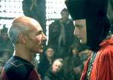
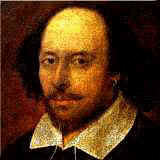
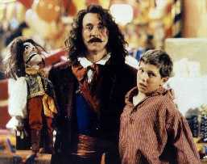

|

Texto de
Susana
Lopes de Alexandria

Indo de Shakespeare at
Pinquio

|
 Henrique VI uma trilogia e pertence ao grupo de peas histricas de Shakespeare, que tambm escreveu tragdias e comdias. A pea trata da histria do rei Henrique VI, filho de Henrique V (que tambm mereceu uma pea de Shakespeare) e da francesa Catherine de Valois. Henrique VI foi rei da da Inglaterra em dois perodos: 1422-61 e 1470-1. Enfrentou uma guerra civil - a Guerra das Rosas -, foi deposto e depois restitudo ao poder, tudo entremeado pelos acessos de loucura que vez ou outra o acometiam. Acabou ficando ao lado dos derrotados na guerra civil e foi morto na Torre de Londres, priso estatal na poca. "Vamos matar todos os advogados"  A citao feita por Picard est na segunda parte da trilogia de Henrique VI, no ato 4, cena 2. Nesta cena, Jack Cade e seus seguidores - todos pessoas simples e rudes - esto planejando a marcha sobre Londres, onde pretendem fazer uma revoluo e tomar o poder da Inglaterra. O personagem Jack Cade e seu grupo so tratados de maneira cmica na pea de Shakespeare, que faz quase uma caricatura dos rebelados e seus objetivos, mostrando com isso que uma eventual vitria dos revoltosos s viria substituir um monarca absoluto por outro - ou seja, as leis continuariam a no ser cumpridas. Da a idia de acabar com todos os advogados. Eis o dilogo de onde partiu a citao de Picard (no original e numa traduo livre). Jack Cade All Jack Cade Dick Butcher Jack Cade Jack Cade Todos juntos Jack Cade Dick Aougueiro Jack Cade
Data: o Pinquio da Enterprise  Embora Pinquio seja mais lembrado pela peculiar caraterstica de ter seu nariz aumentado quando conta uma mentira, Riker no quis dizer que Data era mentiroso ao cham-lo de Pinquio. Na verdade ele estava se referindo ao outro trao do boneco: seu desejo de transformar-se num ser humano de verdade. No fim do conto, Pinquio realiza o sonho de tornar-se humano. O andride Data no consegue o mesmo, mas chega perto no filme "Generations", quando instala seu chip de emoo. Uma
curiosidade: o ator Brent Spiner, que interpreta Data,
coincidentemente participou do musical infantil Geppetto
(2000 - foto), feito para a tev americana. O ator faz o
personagem Stromboli. Rene Auberjonois, o Odo de Deep Space
Nine, tambm faz parte do elenco, na pele do Professor
Buonragazzo. Para saber mais sobre esse musical, clique aqui. |